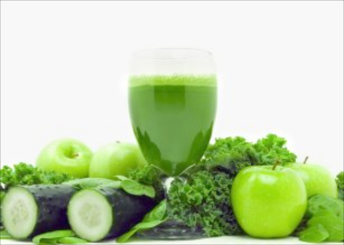
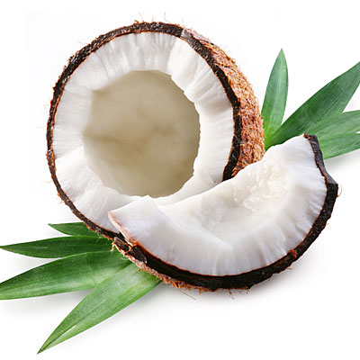
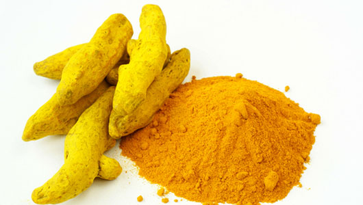
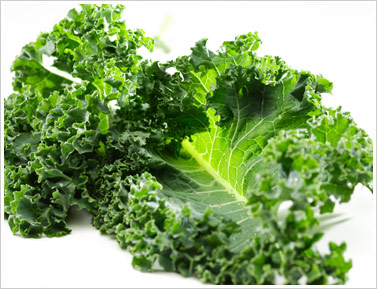

Yah's Cuisine
Blog
Green Juice for Wellness
Green juices are a great way to get in your recommended servings of fresh produce, especially if you have a hard time fitting in loads of broccoli, kale, collards, or cucumbers in your everyday diet. Most green juices pack two servings of fruits and veggies into each bottle, so they're a healthy way to sneak in nutrients if you've been slacking on salads lately. But keep in mind that juicing does strip produce of dietary fiber, which is found in the pulp and skin of produce and aids in digestion, regulates blood sugar levels, and keeps you feeling full longer. So whole foods are still the optimal way to ensure you're getting plenty of fiber in your diet.
10 ways to use coconut oil
1.Cooking Oil Substitute 2.Insect Repellent 3.Deodorant 4.Makeup Remover 5.Toothpaste 6.Lip Balm 7.Dandruff Relief 8.Coffee Creamer 9.Butter substitute 10. Moisturizer
Try Tumeric for healthy glowing flawless skin
 The skin is the outermost layer of the body that is often easily damaged by environmental factors as well as stress and poor eating habits. Although there is a wide market for cosmetic products that offers to improve skin problems, nature also provides a solution to these. Natural treatments for skin that give lasting results are often better than expensive commercial products and cosmetic procedures. One such natural treatment is turmeric powder for skin.
Try this for a morning pick me up
 In my quest for an ingestible, natural energy booster that would work almost as well as my favorite activity-based energy boosters—going for a
walk or bouncing on a big exercise ball—I happily discovered several great replacements for caffeine, with no nasty side effects when used properly. My top 3 are listed here.
1. Ginger. This incredible root has a long and storied history as a natural digestive aid. And those of you who have suffered emotional stress and fatigue know that a malfunctioning digestive tract is u
sually either the cause of such stress and fatigue or the result of it. Ginger, by helping ease the digestive process, helps us remain alert. I can also tell you from experience (and with the confirmation
of my favorite Chinese herbalist) that ginger speeds up our metabolism and circulation, not just our digestion. A single cup of fresh ginger-root tea can seriously make you sweat! I shave off several thin slices
from a fresh, organic root, and steep it in boiling water for 5-10 minutes. If I am running really low, I’ll chew the slices afterward, too. If you tend to run hot or have a metabolic disorder, please be careful.
A tiny amount of ginger is all any of us needs to get the energy boost we’re after: You really can get too much of a good thing when it comes to ginger.
In my quest for an ingestible, natural energy booster that would work almost as well as my favorite activity-based energy boosters—going for a
walk or bouncing on a big exercise ball—I happily discovered several great replacements for caffeine, with no nasty side effects when used properly. My top 3 are listed here.
1. Ginger. This incredible root has a long and storied history as a natural digestive aid. And those of you who have suffered emotional stress and fatigue know that a malfunctioning digestive tract is u
sually either the cause of such stress and fatigue or the result of it. Ginger, by helping ease the digestive process, helps us remain alert. I can also tell you from experience (and with the confirmation
of my favorite Chinese herbalist) that ginger speeds up our metabolism and circulation, not just our digestion. A single cup of fresh ginger-root tea can seriously make you sweat! I shave off several thin slices
from a fresh, organic root, and steep it in boiling water for 5-10 minutes. If I am running really low, I’ll chew the slices afterward, too. If you tend to run hot or have a metabolic disorder, please be careful.
A tiny amount of ginger is all any of us needs to get the energy boost we’re after: You really can get too much of a good thing when it comes to ginger.
20 foods that kick cancers butt
 1.Spinach 2.Kale 3.Collard greens 4.Arugula 5.Dandelion greens 6.Curry 7.Broccoli 8.Broccoli sprouts 9.Cabbage 10.Bok choy 11.Cauliflower 12.Watercress 13.Swiss chard 14.Blueberries 15.Blackberries 16.Raspberries 17.Strawberries 18.Cranberries 19.Red grapes 20.Tomatoes